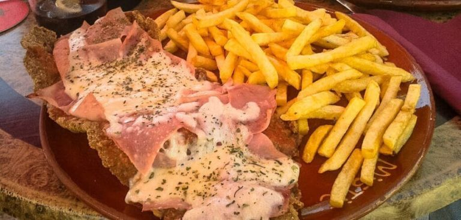

Napolitana
28-08-18
Milanesa napolitana la cual se sirve "al plato" tradicionalmente con una guarnición de papas fritas (debajo de la cubierta de una feta de queso con salsa de tomate y una feta de jamón crudo se encuentra una milanesa que junto a la feta de jamón, a la feta de queso y el añadido de salsa de tomate han sido en conjunto [el conjunto de la milanesa napolitana] cocinadas en un horno). La milanesa napolitana o milanesa a la napolitana , es un plato tipico de la Gastronomía de Argentina. Consiste en una milanesa, habitualmente de carne vacuna, llevada al horno para ser recubierta como una pizza, con salsa de tomate y queso mozzarella, añadiéndosele distintos ingredientes (jamón, cebolla...).

Pizza
28-08-18

La pizza es un pan plano horneado elaborado con harina de trigo, sal, agua y levadura, y cubierto con salsa de tomate, queso y otros ingredientes como salami, champiñones, cebolla, jamón o aceitunas. Original de la cocina napolitana (Italia), se ha hecho muy popular en todo el mundo y presenta muy diversas variantes. Sin embargo, la pizza napolitana ha sido la única para la que se ha reconocido una denominación de origen propia de la Unión Europea, denominada Especialidad Tradicional Garantizada12 (en italiano, STG, Specialità Tradizionale Garantita). Este reconocimiento se obtuvo el 4 de febrero de 2010 a propuesta de la Associazione Verace Pizza Napoletana.3